O secție, o noapte și o vizită anunțată
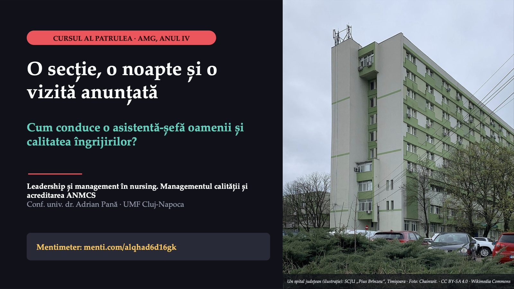
1 / 60Bună ziua și bine ați venit la cursul al patrulea. Astăzi vorbim despre o secție de spital, o noapte de gardă și o vizită anunțată, adică despre leadership și management în nursing și despre managementul calității și acreditarea de către Autoritatea Națională de Management al Calității în Sănătate (ANMCS). Deschideți Mentimeter de pe telefon sau din calculator: codul este pe ecran, iar linkul e și în chat. Îl folosim pe tot parcursul cursului.
Mara, asistentă-șefă pe medicină internă
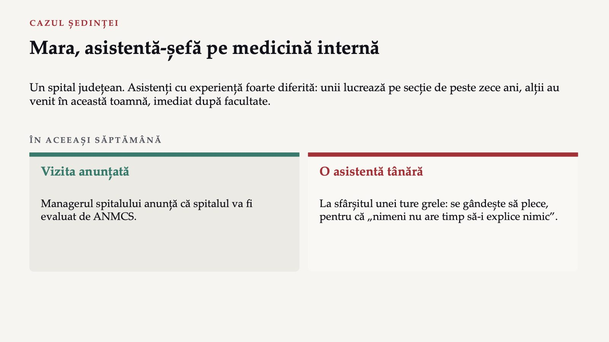
2 / 60Începem cu un caz care ne însoțește tot cursul. Mara este asistentă-șefă pe secția de medicină internă a unui spital județean. Are în subordine asistenți cu experiență foarte diferită: unii lucrează pe secție de peste zece ani, alții au venit în această toamnă, imediat după facultate. În aceeași săptămână se întâmplă două lucruri. Managerul spitalului anunță că spitalul va fi evaluat de ANMCS. Iar o asistentă tânără îi spune Marei, la sfârșitul unei ture grele, că se gândește să plece din spital, pentru că „nimeni nu are timp să-i explice nimic”. Rețineți ambele vești: le urmărim până la ultimul diapozitiv.
Oamenii și standardele: fără legătură?
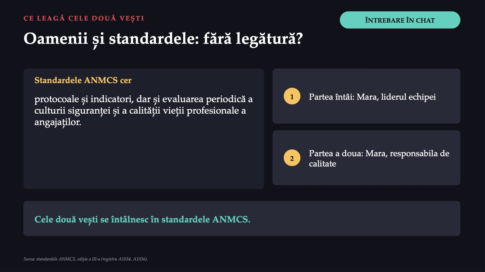
3 / 60Cele două întâmplări par fără legătură: una ține de oameni, cealaltă de documente și de standarde. Scrieți în chat, într-o frază, dacă vedeți o legătură între ele. Legătura există și este scrisă chiar în standardele ANMCS: pe lângă protocoale și indicatori, ele cer evaluarea periodică a culturii siguranței și a calității vieții profesionale a angajaților. De aceea, cursul are două părți. În prima o privim pe Mara ca lider al echipei; în a doua, ca responsabilă de calitatea îngrijirilor de pe secție.
Un singur cuvânt: ce calitate este esențială la un lider în nursing?
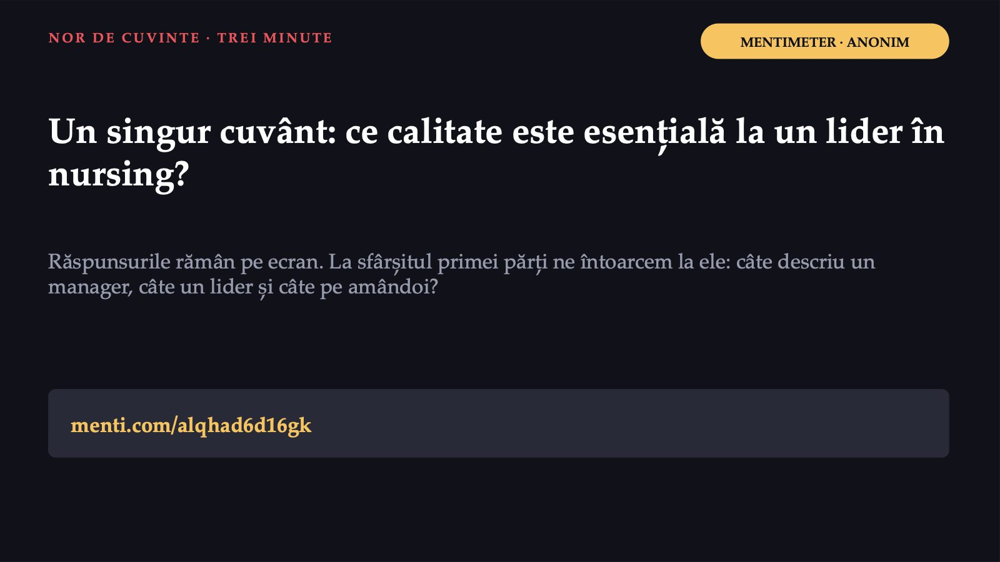
4 / 60Prima activitate, pe Mentimeter, anonim: scrieți un singur cuvânt pentru calitatea pe care o considerați esențială la un lider în nursing. Codul este pe ecran, iar linkul e și în chat. Răspunsurile rămân pe ecran. La sfârșitul primei părți ne întoarcem la ele și vedem câte dintre cuvinte descriu un manager, câte un lider și câte pe amândoi.
Două părți, aceeași secție
 5 / 60
5 / 60Iată ce urmărim azi. Cursul are două părți, pe aceeași secție. Partea întâi privește oamenii: puterea, stilurile de leadership, inteligența emoțională, delegarea, deciziile și conflictele. Partea a doua privește calitatea îngrijirilor: cum o definim, cum o măsurăm, ce înseamnă acreditarea de către ANMCS și cum se face îmbunătățirea continuă. La examen se cer definițiile, distincțiile și clasificările. Cifrele nu se cer pe de rost, cu o singură excepție: cei cinci ani ai ciclului de acreditare și cei cinci ani de valabilitate a certificatului. Le veți întâlni spre final.
Mara este numită. Devine și lider?
![MANAGERUL ȘI LIDERUL · DIN CURSUL TRECUT Mara este numită. Devine și lider? Managerul: numit Întreabă cum și când: cine lucrează în tura de noapte, dacă sunt destule perfuzoare, dacă protocolul a fost respectat. Liderul: acceptat Întreabă ce și de ce: încotro merge secția, de ce pleacă oamenii, ce trebuie schimbat pentru siguranța pacienților. Managementul menține ordinea de zi cu zi; leadershipul face posibilă schimbarea. Secția are nevoie de amândouă. Sursa: OpenStax, 2019 (registru A917); întrebările: sinteză didactică.](diapozitive/C04/006.jpg) 6 / 60
6 / 60Pornim de la o distincție din cursul trecut. Managementul a fost definit prin cele patru funcții ale lui, iar leadershipul ca o relație de influență între oameni care depind unii de alții pentru atingerea unui obiectiv comun. Managerii sunt, de regulă, numiți în funcție; liderii apar prin acceptarea celor care îi urmează. Mara este manager pentru că a fost numită asistentă-șefă. Devine lider numai dacă echipa o urmează și atunci când nu este de față. Diferența se vede în întrebări: managerul întreabă cum și când, liderul întreabă ce și de ce. Managementul menține ordinea de zi cu zi; leadershipul face posibilă schimbarea. Secția are nevoie de amândouă.
De la trăsături la situație
![CUM S-AU SCHIMBAT IDEILE DESPRE LEADERSHIP De la trăsături la situație Trăsăturile teoria „marelui om” Comportamentul ce face liderul Situația potrivirea dintre lider și situație Valorile liderul care transformă și liderul care slujește Trăsăturile nu explică de ce același om conduce bine într-o situație și prost în alta. Pentru curioși (nu se evaluează): succesiunea este o simplificare; teoriile se suprapun în timp. Sursa: OpenStax, 2019 (registru A1006, A1007, A1004, A1005); succesiunea: sinteză didactică. Anii și autorii nu se evaluează.](diapozitive/C04/007.jpg) 7 / 60
7 / 60Cum s-a ajuns la această idee? Primele cercetări sistematice despre leadership au căutat trăsăturile care îl deosebesc pe lider de ceilalți, pornind de la teoria „marelui om”, potrivit căreia unii oameni se nasc cu însușirile necesare unui mare lider. Trăsăturile nu explică însă de ce același om conduce bine într-o situație și prost în alta. Atenția s-a mutat întâi pe ce face liderul, adică pe comportamentul lui, apoi pe potrivirea dintre lider și situație. Teoriile mai noi privesc liderul care transformă valorile și motivația echipei și liderul care conduce slujindu-i pe ceilalți. Succesiunea este o simplificare: teoriile se suprapun în timp. Anii și autorii nu se evaluează.
Cinci surse ale puterii
![FRENCH ȘI RAVEN, DUPĂ OPENSTAX Cinci surse ale puterii De recompensă propune un coleg pentru un curs Coercitivă sancțiunea, observația scrisă De referință oamenii îl urmează pentru că îl admiră De expert colegii vin la el la o puncție dificilă Legitimă funcția din organigramă și fișa postului Puterea de referință tinde să le amplifice pe celelalte; puterea coercitivă tinde să le slăbească. Mara obține mai mult prin competență și respect decât prin funcție și sancțiuni. Sursa: OpenStax, 2019 (registru A1002, A1003); exemplele sunt construite pentru curs.](diapozitive/C04/008.jpg) 8 / 60
8 / 60Cum îi face un lider pe ceilalți să-l urmeze? Prin putere, adică prin sursa influenței lui. John French și Bertram Raven au descris cinci surse. Puterea de recompensă: asistenta-șefă propune un coleg pentru un curs. Puterea coercitivă: sancțiunea, observația scrisă. Puterea de referință: oamenii îl urmează pentru că îl admiră. Puterea de expert: colegii vin la el când nu reușesc o puncție venoasă dificilă. Puterea legitimă: funcția din organigramă și din fișa postului. Sursele nu sunt la fel de eficace: puterea de referință tinde să le amplifice pe celelalte, iar puterea coercitivă tinde să le slăbească. Pentru Mara, consecința practică este că va obține mai mult prin competență și respect decât prin funcție și sancțiuni.
Un asistent cu cincisprezece ani de experiență, fără nicio funcție, este căutat de toți colegii la un pacient instabil. Ce putere are în primul rând?
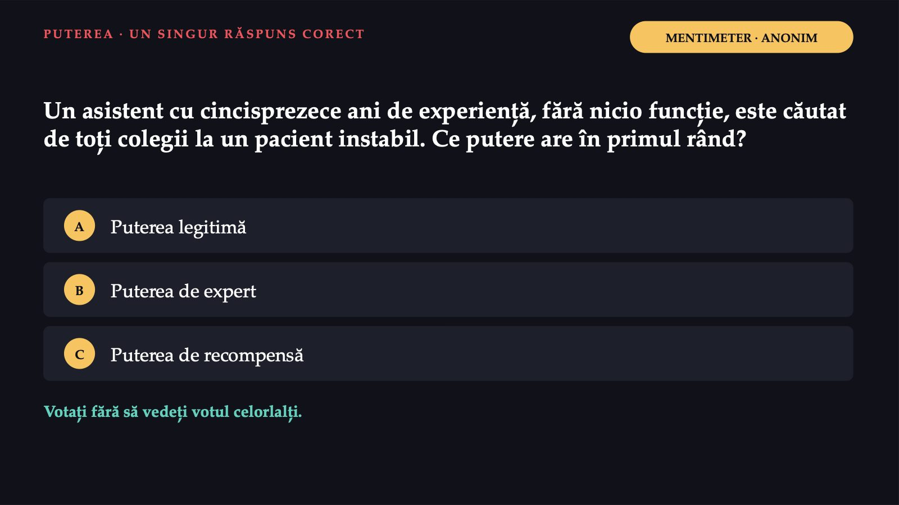
9 / 60Să verificăm pe Mentimeter. Un asistent cu cincisprezece ani de experiență, fără nicio funcție, este căutat de toți colegii la un pacient instabil. Ce putere are în primul rând? Gândiți-vă la cele cinci surse de pe diapozitivul anterior. Votați fără să vedeți votul celorlalți; linkul e și în chat.
B. Puterea de expert
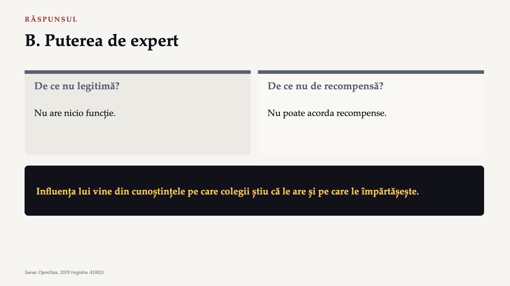
10 / 60Varianta bună este B, puterea de expert. Nu are putere legitimă, pentru că nu are nicio funcție. Nu are nici putere de recompensă, pentru că nu poate acorda recompense. Influența lui vine din cunoștințele pe care colegii știu că le are și pe care este dispus să le împărtășească. Exemplul ilustrează o idee de pe diapozitivul cu managerul și liderul: influența nu vine numai din funcție. Trecem acum de la sursele puterii la stilurile de conducere.
Inspiră, nu doar recompensează
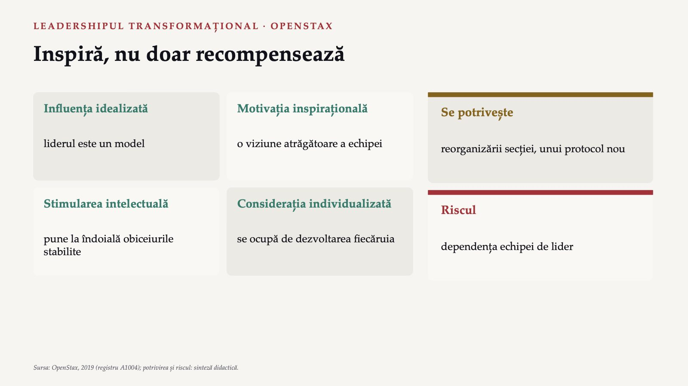
11 / 60Primul stil: leadershipul transformațional. Liderul transformațional nu obține schimbarea prin recompense oferite în schimbul efortului, cum face liderul tranzacțional, ci îi inspiră pe ceilalți prin valorile, viziunea, pasiunea și angajamentul lui. Are patru componente: influența idealizată, adică liderul este un model; motivația inspirațională, o viziune atrăgătoare a ce ar putea deveni echipa; stimularea intelectuală, adică pune la îndoială obiceiurile stabilite; și considerația individualizată, grija pentru dezvoltarea fiecăruia. În nursing, stilul se potrivește momentelor de schimbare: reorganizarea unei secții, introducerea unui protocol nou. Riscul lui este dependența echipei de lider: când liderul pleacă, entuziasmul poate pleca odată cu el.
Un lider bun salvează pacienți?
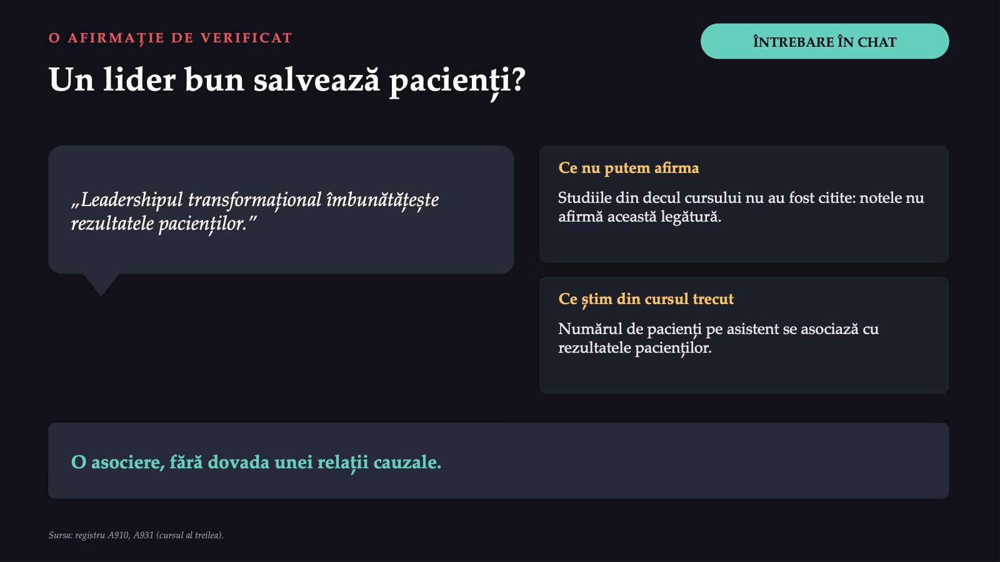
12 / 60O afirmație pe care o auziți des: „leadershipul transformațional îmbunătățește rezultatele pacienților”. Scrieți în chat dacă o credeți și de ce. Decul cursului citează studii despre această legătură, dar ele nu au fost citite pentru acest curs, așa că notele nu afirmă legătura. Ce știm din cursul trecut este altceva: numărul de pacienți pe asistent se asociază cu rezultatele pacienților. Este o asociere, fără dovada unei relații cauzale. Distincția dintre asociere și cauză contează ori de câte ori cineva vă spune că o schimbare de stil va salva pacienți.
Stilul se alege după omul condus
![LEADERSHIPUL SITUAȚIONAL Stilul se alege după omul condus Criteriul: pregătirea celui condus pentru sarcina respectivă, adică capacitatea, motivația și angajamentul lui. Cine nu are încă această pregătire are nevoie, de regulă, de un stil mai directiv. PATRU STILURI, ÎN FORMA DIN DECUL CURSULUI · NU SE EVALUEAZĂ Directiv „spune” De îndrumare „explică” Participativ „sprijină” Delegativ „încredințează” Greșeala frecventă: același stil cu toată lumea. Sursa: OpenStax, 2019 (registru A1007, A1046); cele patru stiluri: convenție a cursului.](diapozitive/C04/013.jpg) 13 / 60
13 / 60Al doilea stil: leadershipul situațional. Ideea de bază este că nu există un stil unic, bun în orice situație. Între teoriile situaționale se numără modelul ciclului de viață, atribuit lui Paul Hersey și Kenneth Blanchard. Criteriul este pregătirea celui condus pentru sarcina respectivă: capacitatea, motivația și angajamentul lui. Cine nu are încă această pregătire are nevoie, de regulă, de un stil mai directiv. Decul cursului descrie patru stiluri: directiv, de îndrumare, participativ și delegativ; ele nu se evaluează, dar ne ajută să gândim. Greșeala frecventă a asistentului-șef nu este un stil „rău”, ci același stil cu toată lumea: controlul strâns îi demotivează pe experți, iar libertatea deplină îi lasă singuri pe începători.
Ce stil pentru fiecare?
 14 / 60
14 / 60Să aplicăm. Patru situații de pe secția Marei. Prima: o asistentă venită acum o săptămână pregătește o perfuzie cu un medicament pe care nu l-a mai administrat. A doua: un asistent cu opt luni de practică montează primele catetere urinare la pacienți dificili; este dornic să învețe, dar mai greșește. A treia: echipa experimentată trece la o fișă nouă de evaluare a riscului de cădere și se teme că îi ia timp de la pacienți. A patra: o asistentă cu doisprezece ani pe secție coordonează instruirea colegilor pentru evaluarea ANMCS. Alegeți o situație și scrieți în chat, într-o frază, ce stil i se potrivește și de ce. Citiți și argumentele colegilor care au ales altfel, apoi votați pe Mentimeter varianta care potrivește stilurile cu situațiile.
Directiv, de îndrumare, participativ, delegativ
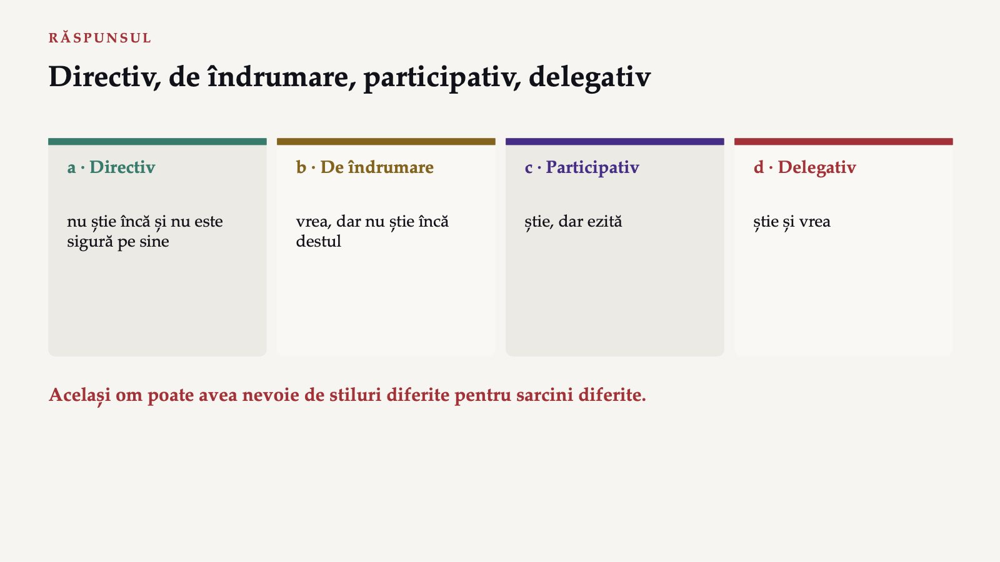
15 / 60Iată potrivirea: directiv, de îndrumare, participativ, delegativ. Asistenta din prima săptămână nu știe încă și nu este sigură pe sine: are nevoie de instrucțiuni clare, pas cu pas, și de supraveghere atentă. Asistentul cu opt luni de practică vrea, dar nu știe încă destul: explicații, întrebări deschise, încurajare. Echipa experimentată știe, dar ezită: decizia se ia împreună, cu sprijin și resurse. Asistenta cu doisprezece ani știe și vrea: primește obiective și termene clare și libertate în execuție. Rețineți ideea, nu etichetele: același om poate avea nevoie de stiluri diferite pentru sarcini diferite. Asistenta tânără care vrea să plece din spitalul Marei este, cel mai probabil, în a doua situație.
Întâi serviciul, apoi conducerea
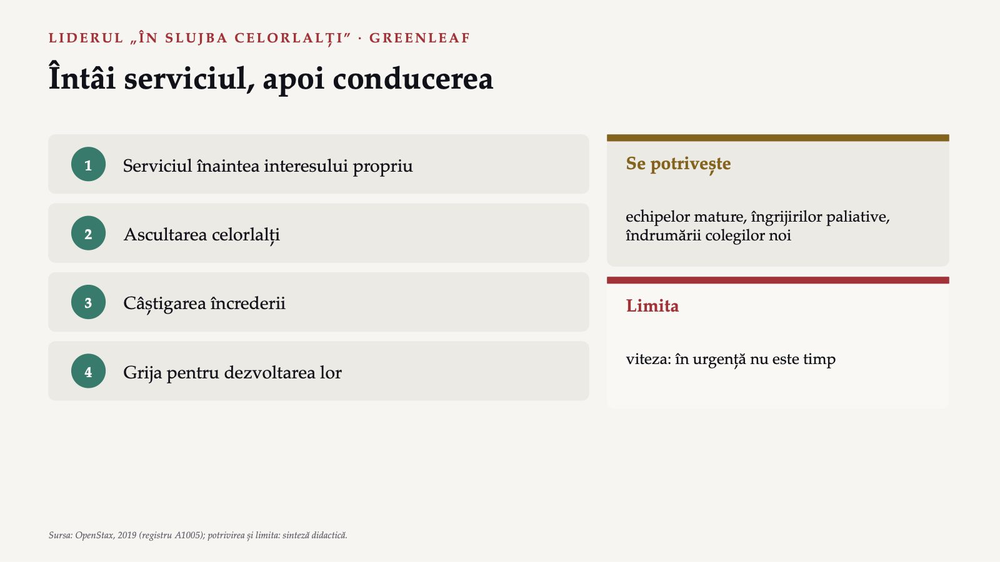
16 / 60Al treilea stil: liderul „în slujba celorlalți”, formulat de Robert Greenleaf, pentru care leadershipul decurge în mod firesc din serviciu. Un astfel de lider renunță la laudele personale și se dedică unei cauze mai mari decât el. Patru trăsături sunt centrale: serviciul înaintea interesului propriu, ascultarea celorlalți, câștigarea încrederii și grija pentru dezvoltarea lor. Întrebarea prin care decul cursului rezumă stilul este dacă oamenii conduși devin, cu timpul, mai sănătoși, mai liberi, mai autonomi și mai dispuși să-i servească pe alții. În nursing se potrivește echipelor stabile și mature, îngrijirilor paliative, îndrumării colegilor noi. Limita lui este viteza: în urgență nu este timp să asculți pe toată lumea.
Trei stiluri de leadership, comparate
 17 / 60
17 / 60Tabelul pune cele trei stiluri alături. Stilul transformațional urmărește viziunea și inspirarea echipei; se potrivește schimbării și crizei; punctul lui tare este angajamentul și inovația, iar limita, dependența de lider. Stilul situațional urmărește potrivirea stilului cu omul; se potrivește aproape oriunde, dacă este aplicat corect; aduce flexibilitate, dar cere evaluarea continuă a fiecărui om. Stilul „în slujba celorlalți” urmărește binele celorlalți; se potrivește echipelor mature; aduce încredere și loialitate, cu prețul unei decizii lente. Tabelul este o sinteză didactică și nu conține date. Pentru curioși, decul cursului prezintă și șase stiluri emoționale, care nu se evaluează.
Inteligența emoțională
 18 / 60
18 / 60Primul termen nou al cursului: inteligența emoțională. Gândiți-vă la o tură în care un pacient o insultă pe Mara, un medic îi contestă o decizie și o colegă plânge în camera de gardă. Cunoștințele clinice nu o ajută în asemenea momente. O ajută inteligența emoțională: capacitatea de a recunoaște, de a înțelege, de a lua în seamă și de a gestiona propriile emoții și emoțiile celorlalți. Are patru componente: conștiința de sine, adică îți recunoști emoțiile și efectul lor asupra deciziilor; stăpânirea de sine, adică îți controlezi emoțiile potrivit situației; empatia, adică înțelegi emoțiile celorlalți; și abilitățile sociale, adică gestionezi latura emoțională a relațiilor.
O tură grea: ce componentă vedeți?
![INTELIGENȚA EMOȚIONALĂ PE SECȚIE ÎNTREBARE ÎN CHAT O tură grea: ce componentă vedeți? Conștiința de sine E iritată de un pacient dificil și face o pauză înainte să-i răspundă. Stăpânirea de sine Rămâne calmă la o resuscitare și dă indicații clare. Empatia Vede colega nouă copleșită și îi propune o discuție, fără să o judece. Abilitățile sociale Mediază conflictul dintre un rezident și o asistentă cu experiență. Inteligența emoțională se poate dezvolta, cel puțin în parte, prin exercițiu. Exemplele: decul cursului; dezvoltarea prin exercițiu: sinteză didactică.](diapozitive/C04/019.jpg) 19 / 60
19 / 60Iată cele patru componente pe secție. Scrieți în chat exemplul în care v-ați recunoscut cel mai ușor. Conștiința de sine: asistenta observă că este iritată de un pacient dificil și se oprește o clipă înainte să-i răspundă. Stăpânirea de sine: asistenta coordonatoare rămâne calmă la o resuscitare și dă indicații clare. Empatia: vede o colegă nouă copleșită și îi propune o discuție, fără să o judece. Abilitățile sociale: asistenta-șefă mediază conflictul dintre un medic rezident și o asistentă cu experiență. Managerii care își cunosc emoțiile le pot folosi în decizii, iar cei care înțeleg emoțiile celorlalți pot ajuta grupurile să lucreze mai bine. Inteligența emoțională se poate dezvolta, cel puțin în parte, prin exercițiu; cât de mult rămâne o întrebare deschisă.
Cât de confortabil v-ați simți să gestionați un conflict între doi colegi din echipa de îngrijire?
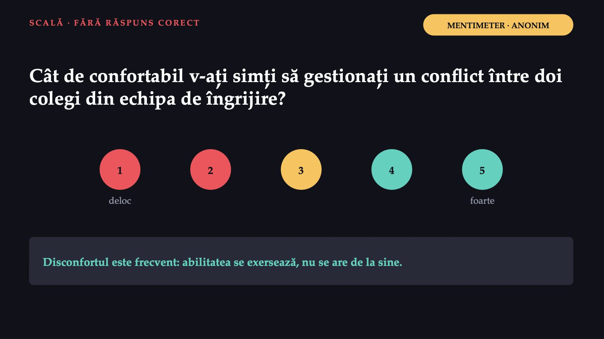
20 / 60Pe Mentimeter, anonim, o scală de la unu la cinci: cât de confortabil v-ați simți să gestionați un conflict între doi colegi din echipa de îngrijire? Aici nu există variantă bună sau greșită. Să privim distribuția voturilor: disconfortul este frecvent, iar abilitatea se exersează, nu se are de la sine.
Ce face Ana?
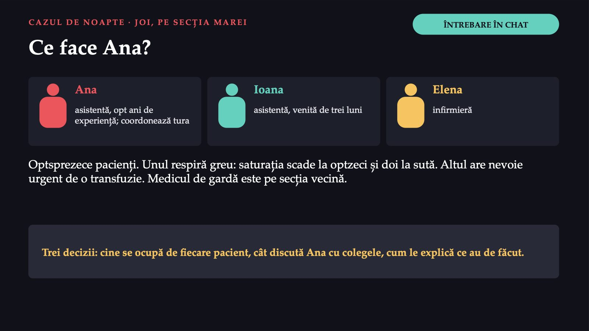
21 / 60Acum cazul de noapte. Este noaptea de joi, pe secția Marei. În tură sunt două asistente, Ana, cu opt ani de experiență, care coordonează tura, și Ioana, venită de trei luni, și o infirmieră, Elena. Au în grijă optsprezece pacienți. Un pacient începe să respire greu, iar saturația lui scade la optzeci și doi la sută. În același timp, un alt pacient are nevoie urgent de o transfuzie. Medicul de gardă acoperă și secția vecină și este, în acel moment, acolo. Ce face Ana? Scrieți în chat prima ei mișcare. Situația cere trei decizii: cine se ocupă de fiecare pacient, cât discută Ana cu colegele înainte să decidă și cum îi explică fiecăreia ce are de făcut.
Ce înseamnă delegarea
![GHIDUL NCSBN–ANA, 2019 Ce înseamnă delegarea Permisiunea dată unei persoane de a efectua o activitate de îngrijire specifică, care depășește rolul ei obișnuit. Cine răspunde Cel care primește activitatea răspunde de executarea ei; asistentul medical care o deleagă păstrează răspunderea de ansamblu pentru pacient. Ce nu se deleagă Judecata profesională de îngrijire: evaluarea pacientului și deciziile despre planul lui de îngrijire. Sursa: NCSBN și ANA, 2019 (registru A1009, A1010). Ghid american; în România, în limitele reglementărilor profesiei și ale fișei postului.](diapozitive/C04/022.jpg) 22 / 60
22 / 60Ca să judecăm ce face Ana, avem nevoie de un cuvânt precis: delegarea. Ghidul pentru delegarea în nursing, adoptat în 2019 de Consiliul Național al Consiliilor de Stat de Nursing (NCSBN) și de Asociația Americană a Asistenților Medicali (ANA), o definește ca permisiunea dată unei persoane de a efectua o activitate de îngrijire specifică, care depășește rolul ei obișnuit. Cel care primește activitatea răspunde de executarea ei, dar asistentul medical care o deleagă păstrează răspunderea de ansamblu pentru pacient. Judecata profesională de îngrijire nu se deleagă: evaluarea pacientului și deciziile despre planul lui de îngrijire rămân la asistentul medical. Ghidul este american; în România, principiile lui se aplică în limitele reglementărilor profesiei și ale fișei postului.
Delegare, repartizare, predare
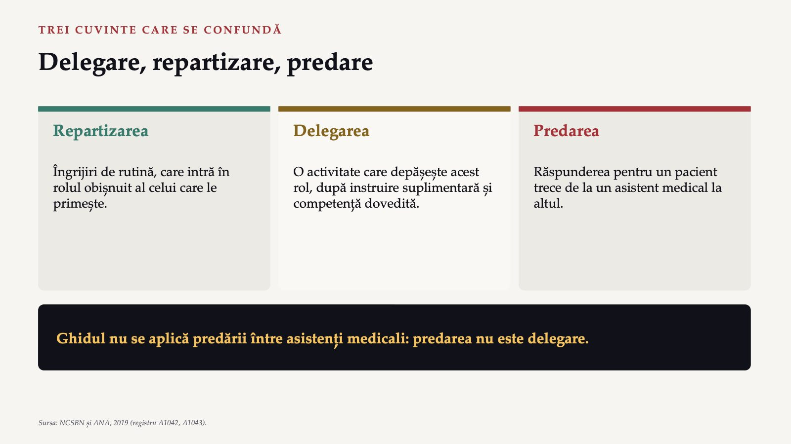
23 / 60Trei cuvinte se confundă ușor. Repartizarea privește îngrijirile de rutină, care intră în rolul obișnuit al celui care le primește. Delegarea privește o activitate care depășește acest rol, pentru care persoana a primit instruire suplimentară și și-a dovedit competența. Predarea înseamnă că răspunderea pentru îngrijirea unui pacient trece de la un asistent medical la altul. Ghidul nu se aplică predării: predarea nu este delegare. Țineți minte această distincție; o folosim imediat în cazul de noapte.
Cinci condiții ale unei delegări sigure
![CELE CINCI DREPTURI ALE DELEGĂRII · NCSBN–ANA Cinci condiții ale unei delegări sigure 1 Sarcina potrivită: în fișa postului sau în procedurile scrise ale unității 2 Împrejurarea potrivită: pacient stabil; dacă se schimbă, se anunță asistentul 3 Persoana potrivită: are cunoștințele și abilitățile necesare 4 Instrucțiunile potrivite: ce se culege, cum și când se raportează 5 Supravegherea potrivită: urmărește, intervine, evaluează rezultatul Comunicarea merge în ambele sensuri: cel care primește întreabă, confirmă și nu modifică nimic singur. Sursa: NCSBN și ANA, 2019 (registru A1011, A1012).](diapozitive/C04/024.jpg) 24 / 60
24 / 60Cum decide asistentul medical dacă o activitate poate fi delegată? Ghidul cere cinci condiții, numite „cele cinci drepturi ale delegării”. Sarcina potrivită: activitatea intră în fișa postului sau în procedurile scrise ale unității. Împrejurarea potrivită: pacientul este stabil; dacă starea lui se schimbă, persoana anunță asistentul medical, care reevaluează situația. Persoana potrivită: are cunoștințele și abilitățile necesare. Instrucțiunile potrivite: ce date se culeg, cum și când se raportează. Supravegherea potrivită: asistentul urmărește executarea, intervine la nevoie și evaluează rezultatul. Comunicarea merge în ambele sensuri: cel care primește pune întrebări de clarificare, acceptă sarcina și nu modifică nimic fără să-l consulte pe cel care i-a delegat-o.
Ana îi repartizează Ioanei pacientul cu transfuzia
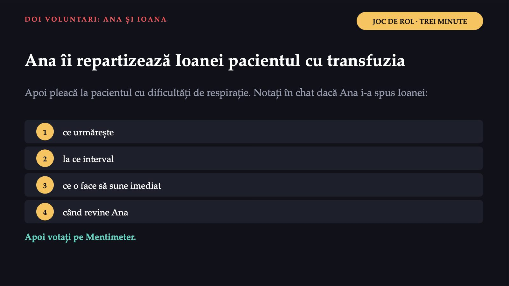
25 / 60Acum un joc de rol, cu doi voluntari. Anunțați-vă cu reacția „mână ridicată” din Teams; cei doi vorbesc cu microfonul deschis, unul în rolul Anei, celălalt în rolul Ioanei. Ana îi repartizează Ioanei pacientul cu transfuzia și pleacă la pacientul cu dificultăți de respirație. Ceilalți urmăriți patru lucruri și notați în chat ce a lipsit: i-a spus Ana Ioanei ce urmărește, la ce interval, ce o face să sune imediat și când revine? Apoi votăm pe Mentimeter.
Ana îi repartizează Ioanei pacientul cu transfuzia. Este aceasta o delegare?
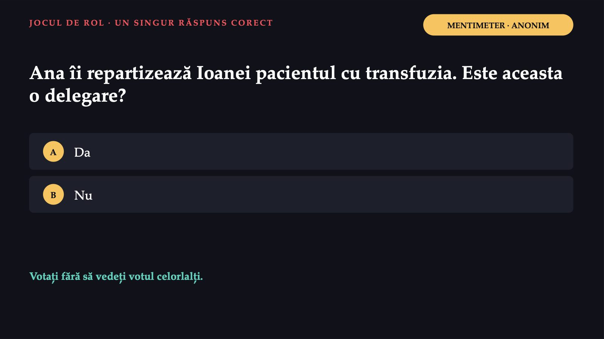
26 / 60Întrebarea de pe Mentimeter: Ana îi repartizează Ioanei pacientul cu transfuzia. Este aceasta o delegare? Gândiți-vă la cele trei cuvinte de mai devreme, repartizare, delegare și predare, și la cine sunt cele două persoane. Votați fără să vedeți votul celorlalți.
B. Nu: între două asistente medicale este o predare
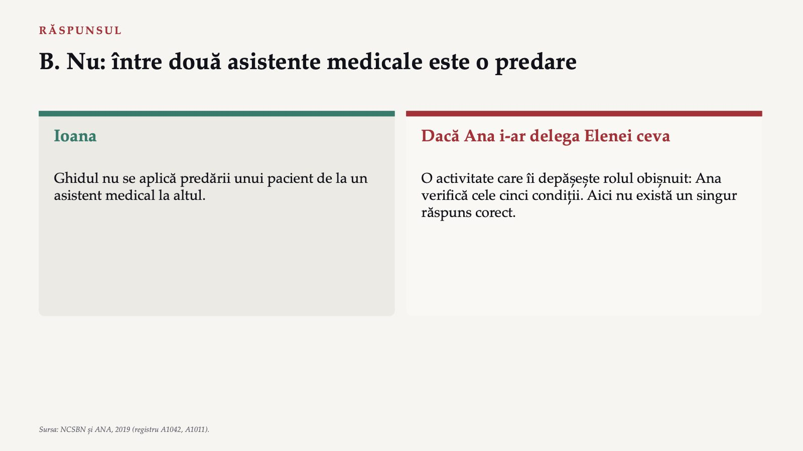
27 / 60Varianta bună este B: nu. Între două asistente medicale, transferul îngrijirii unui pacient este o predare, iar ghidul nu se aplică predării unui pacient de la un asistent medical la altul. Delegarea apare abia dacă Ana i-ar încredința Elenei, infirmiera, o activitate care îi depășește rolul obișnuit. Atunci Ana ar verifica cele cinci condiții: sarcina, împrejurarea, persoana, instrucțiunile și supravegherea. Scrieți în chat ce ar verifica întâi Ana în acest caz. Aici nu există o singură soluție bună; contează raționamentul.
Trei moduri de a decide
![CUM SE IAU DECIZIILE · CONVENȚIE A CURSULUI Trei moduri de a decide Rațional Pași succesivi, de la definirea problemei la evaluarea rezultatului; când există timp și date. Intuitiv Expertul recunoaște repede tiparul situației. Benner: drumul de la începător la expert. Participarea echipei De la decizia luată singur la decizia de grup, după calitatea cerută, acceptare și timp. În urgență decide cel care coordonează; un program nou al turelor se decide împreună. Sursa: Vroom, Yetton și Jago, după OpenStax (registru A1007); cele trei moduri: convenție a cursului.](diapozitive/C04/028.jpg) 28 / 60
28 / 60Al doilea lucru pe care îl face Ana este să decidă. Decul cursului deosebește trei moduri de a lua decizii. Modul rațional merge în pași succesivi, de la definirea problemei și culegerea datelor până la alegere, aplicare și evaluarea rezultatului; funcționează bine când există timp și date. Modul intuitiv se bazează pe experiență: expertul recunoaște repede tiparul situației; cercetătoarea Patricia Benner a descris trecerea asistentului medical de la începător la expert. Al treilea mod privește gradul de participare a echipei, de la decizia luată singur la decizia de grup; modelul lui Vroom, Yetton și Jago îl alege după cât de bună trebuie să fie decizia, cât contează acceptarea ei și cât timp este disponibil. În urgență decide cel care coordonează; un program nou al turelor se decide împreună.
Ce face Ana în noaptea de joi
![ÎNAPOI LA NOAPTEA DE JOI Ce face Ana în noaptea de joi 1 Decide singură: nu este timp de consultare. 2 Merge ea la pacientul care respiră greu: evaluarea lui cere judecată clinică. 3 Pacientul cu transfuzia îi revine Ioanei: o predare, cu semnele de urmărit și când o cheamă. 4 Elena: rutina infirmierei este repartizare; altceva este delegare, cu cele cinci condiții. 5 Îl cheamă imediat pe medicul de gardă: situația, contextul, evaluarea, recomandarea. Față de Ioana, în noaptea aceea: un stil directiv.](diapozitive/C04/029.jpg) 29 / 60
29 / 60Ne întoarcem la noaptea de joi. Ana decide singură, pentru că nu este timp de consultare. Se duce ea la pacientul care respiră greu, pentru că evaluarea lui cere judecată clinică, iar judecata clinică nu se deleagă. Pacientul cu transfuzia îi revine Ioanei: între două asistente medicale, este o predare. Ana se asigură că pacientul este stabil și că Ioana știe exact ce semne urmărește și când o cheamă. Pentru Elena, Ana se întreabă întâi dacă activitatea este rutina infirmierei, adică o repartizare, sau o depășește; numai în al doilea caz este delegare, cu cele cinci condiții. Îl cheamă imediat pe medicul de gardă, printr-un mesaj structurat: situația, contextul, evaluarea și recomandarea. Față de Ioana, în noaptea aceea, Ana folosește un stil directiv.
Cinci moduri de abordare a conflictului
![KENNETH THOMAS · OPENSTAX, ORGANIZATIONAL BEHAVIOR Cinci moduri de abordare a conflictului Competiția acțiune rapidă și hotărâtă, de exemplu în urgență Colaborarea preocupările ambelor părți sunt prea importante pentru un compromis Compromisul o soluție temporară, sub presiunea timpului, între părți egale Evitarea problema este neînsemnată sau oamenii trebuie să se calmeze Acomodarea descoperim că greșim sau armonia echipei contează mai mult Niciun stil nu este bun întotdeauna. Nivelurile asertivității și ale cooperării nu se evaluează. Sursa: OpenStax, Organizational Behavior, 2019 (registru A1044, A1045).](diapozitive/C04/030.jpg) 30 / 60
30 / 60Ultimul subiect al primei părți: conflictele. Sunt inevitabile într-o echipă care lucrează sub presiune, cu profesii diferite și cu ture care se succed. Kenneth Thomas a descris cinci moduri de abordare a conflictului. Competiția este utilă când este nevoie de o acțiune rapidă și hotărâtă, de exemplu în urgență, cu riscul de a strica relațiile. Colaborarea se potrivește când preocupările ambelor părți sunt prea importante pentru un compromis. Compromisul dă o soluție temporară, sub presiunea timpului, între părți cu putere egală. Evitarea este utilă când problema este neînsemnată sau când oamenii au nevoie să se calmeze. Acomodarea, când descoperim că greșim sau când armonia echipei contează mai mult. Niciun stil nu este bun întotdeauna.
De trei săptămâni, doi asistenți se ceartă pe împărțirea saloanelor. Amândoi au argumente bune, iar conflictul afectează echipa. Ce stil se potrivește?
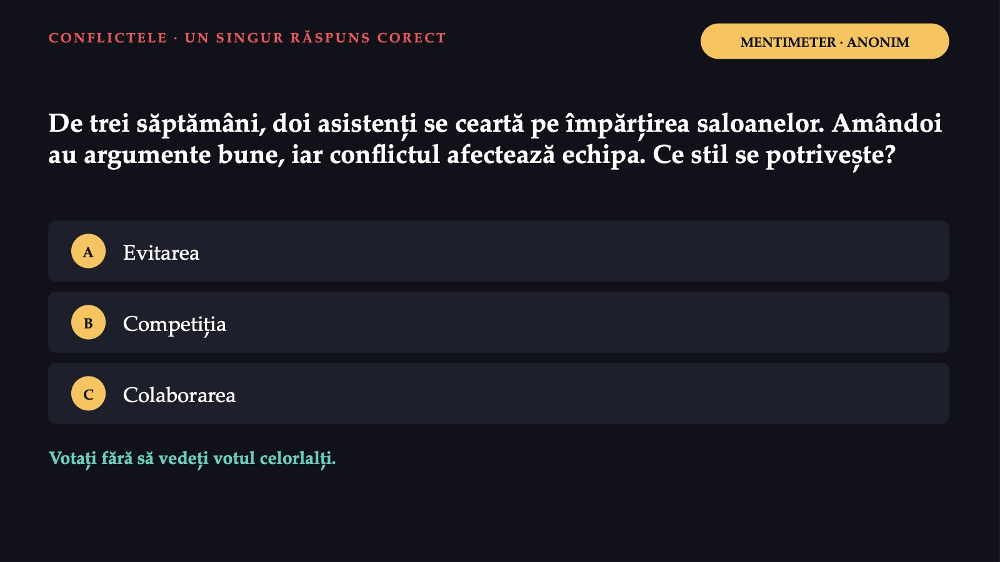
31 / 60Pe Mentimeter: de trei săptămâni, doi asistenți se ceartă pe împărțirea saloanelor în tura de zi. Amândoi au argumente bune, iar conflictul afectează toată echipa. Ce stil se potrivește cel mai bine: evitarea, competiția sau colaborarea? Uitați-vă la cât durează conflictul și cât de important este. Votați fără să vedeți votul celorlalți.
C. Colaborarea
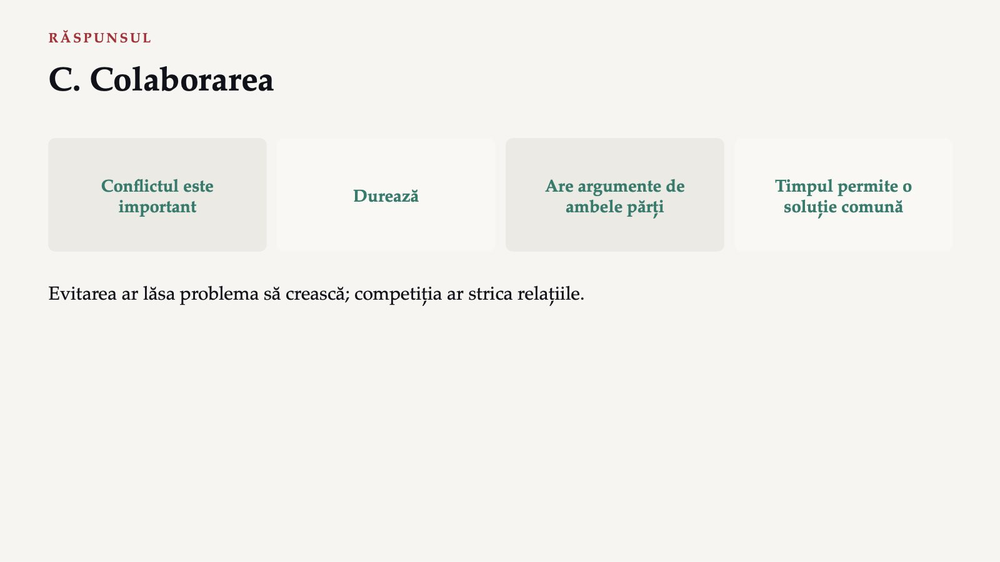
32 / 60Varianta bună este C, colaborarea. Conflictul este important, durează de trei săptămâni, are argumente de ambele părți, iar timpul permite o soluție care să țină seama de amândoi. Evitarea ar lăsa problema să crească; competiția ar strica relațiile. Concluzia se generalizează: asistenta-șefă care evită orice conflict lasă problemele să crească, iar cea care câștigă orice conflict își pierde echipa.
Ce au descris cuvintele voastre?
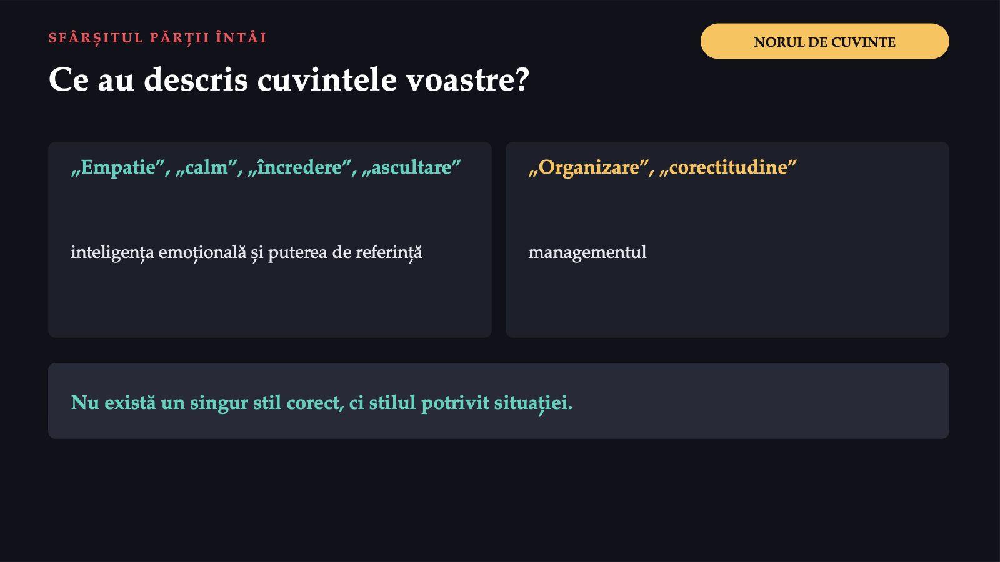
33 / 60Să privim din nou norul de cuvinte de la început. Cuvinte precum „empatie”, „calm”, „încredere” sau „ascultare” descriu inteligența emoțională și puterea de referință. „Organizare” și „corectitudine” descriu managementul. Scrieți în chat ce cuvânt din nor vă surprinde acum. Concluzia primei părți este simplă: nu există un singur stil corect, ci stilul potrivit situației. Facem o scurtă oprire, apoi continuăm cu partea a doua, despre calitate.
Vizita anunțată
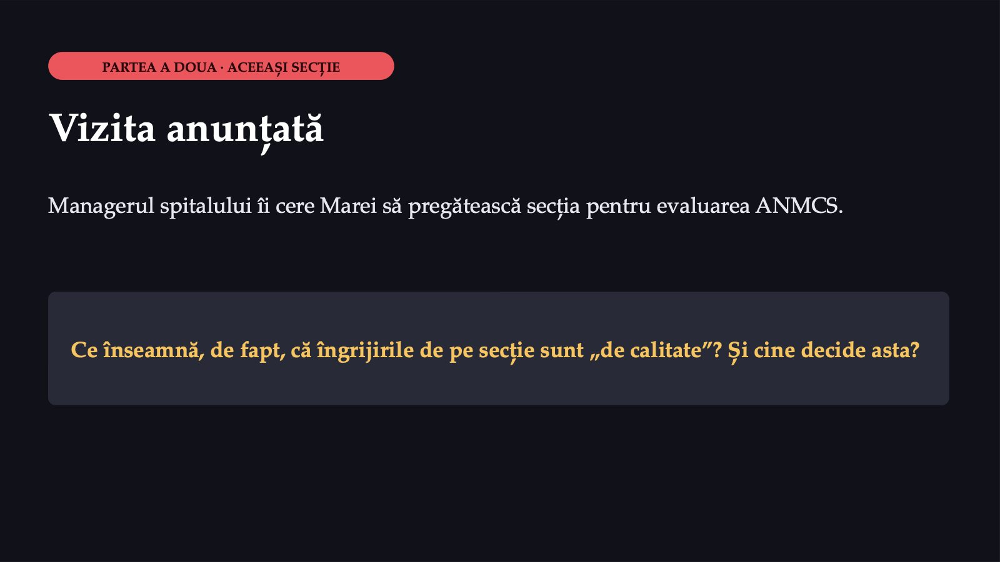
34 / 60Bine ați revenit. Partea a doua se petrece pe aceeași secție. Managerul spitalului îi cere Marei să pregătească secția pentru evaluarea ANMCS. Prima ei întrebare este cea pe care și-ar pune-o orice asistent medical: ce înseamnă, de fapt, că îngrijirile de pe secție sunt „de calitate”? Și cine decide asta? Scrieți în chat, în câteva cuvinte, ce înseamnă pentru voi o îngrijire de calitate.
Două definiții ale calității
![LEGEA NR. 185/2017 · INSTITUTUL DE MEDICINĂ AL SUA, 1990 Două definiții ale calității Legea: conformarea la standarde „nivelul de conformare a serviciilor de sănătate la cerințele standardelor ANMCS, pentru a asigura pacienților cel mai bun rezultat, la cel mai bun cost, cu cel mai mic risc iatrogen […]” Institutul de Medicină: rezultatele „măsura în care serviciile de sănătate pentru persoane și populații cresc probabilitatea rezultatelor de sănătate dorite și sunt în acord cu cunoștințele profesionale actuale” Sursa: Legea nr. 185/2017 (registru A1022); Busse și colab., 2019 (registru A1013).](diapozitive/C04/035.jpg) 35 / 60
35 / 60Există două feluri de a defini calitatea. Legea nr. 185/2017 privind asigurarea calității în sistemul de sănătate dă o definiție juridică: calitatea este nivelul de conformare a serviciilor de sănătate la cerințele standardelor ANMCS, pentru a asigura pacienților cel mai bun rezultat, la cel mai bun cost, cu cel mai mic risc iatrogen. În sensul legii, calitatea se măsoară prin cât de mult respectă serviciile aceste cerințe. Definițiile internaționale pornesc de la rezultatele pentru pacient. Institutul de Medicină al Statelor Unite ale Americii a definit, în 1990, calitatea îngrijirii ca măsura în care serviciile cresc probabilitatea rezultatelor de sănătate dorite și sunt în acord cu cunoștințele profesionale actuale. Comparați cuvintele din chat cu cele două definiții.
Șase dimensiuni ale calității
![INSTITUTUL DE MEDICINĂ AL SUA, 2001 Șase dimensiuni ale calității Sigură fără vătămare prin chiar îngrijirea Eficace bazată pe dovezi, pentru cei care pot beneficia Centrată pe pacient preferințele, nevoile, valorile lui Promptă fără așteptări care fac rău Eficientă fără risipă Echitabilă aceeași calitate pentru oricine La nivelul serviciilor de sănătate pare să se contureze un consens: eficace, sigure, centrate pe oameni. Sursa: Busse și colab., 2019 (registru A1014, A1032); explicațiile: convenție a cursului.](diapozitive/C04/036.jpg) 36 / 60
36 / 60În 2001, același institut a propus șase obiective de îmbunătățire, pe care multe organizații le-au preluat ca șase dimensiuni ale calității. Îngrijirea de calitate este sigură, adică evită vătămarea pacienților prin chiar îngrijirea care ar trebui să-i ajute; eficace, bazată pe dovezi, pentru toți cei care pot beneficia; centrată pe pacient, cu respect pentru preferințele, nevoile și valorile lui; promptă, fără așteptări care fac rău; eficientă, fără risipă; și echitabilă, de aceeași calitate indiferent de sex, etnie, loc de rezidență sau situație socio-economică. Observatorul European al Sistemelor și Politicilor de Sănătate notează că pare să se contureze un consens: calitatea înseamnă servicii eficace, sigure și centrate pe oameni.
Structură, proces, rezultat
![MODELUL LUI DONABEDIAN APLICAȚI PE SECȚIA MAREI Structură, proces, rezultat Structura asistenții din fiecare tură, pregătirea lor, saltelele pentru prevenirea escarelor, protocoalele scrise Procesul evaluarea riscului de escare la internare, igiena mâinilor, planul de îngrijire completat Rezultatul escarele apărute în spital, căderile, infecțiile asociate, satisfacția, reinternările O structură bună face posibil un proces bun; un proces bun face probabil un rezultat bun. Probabil, nu sigur. Pentru curioși (nu se evaluează): de la inspecție la îmbunătățirea continuă, în note. Sursa: Busse și colab., 2019 (registru A1015); exemplele sunt construite pentru curs.](diapozitive/C04/037.jpg) 37 / 60
37 / 60Cum măsurăm calitatea? Modelul lui Avedis Donabedian, propus în 1966, este larg acceptat: structură, proces, rezultat. Structura cuprinde caracteristicile locului de îngrijire: resursele materiale, intelectuale și umane. Pe secția Marei: câți asistenți sunt în fiecare tură, ce pregătire au, dacă există saltele pentru prevenirea escarelor și protocoale scrise. Procesul este ce se face efectiv: dacă riscul de escare este evaluat la internare, dacă se respectă igiena mâinilor, dacă planul de îngrijire este completat. Rezultatul descrie efectele asupra sănătății: escarele apărute în spital, căderile, infecțiile asociate asistenței medicale, satisfacția, reinternările. O structură bună face posibil un proces bun; un proces bun face probabil un rezultat bun. Probabil, nu sigur: rezultatul depinde și de cât de bolnav era pacientul la internare.
Ce măsoară munca asistenților
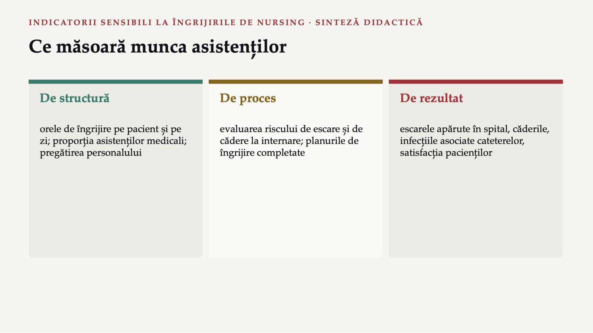
38 / 60Unii indicatori depind în primul rând de munca asistenților medicali; îi numim indicatori sensibili la îngrijirile de nursing. Îi ordonăm după modelul lui Donabedian. De structură: numărul de ore de îngrijire pe pacient și pe zi, proporția asistenților medicali în totalul personalului de îngrijire, nivelul de pregătire. De proces: evaluarea riscului de escare și de cădere la internare, completarea planurilor de îngrijire. De rezultat: escarele apărute în spital, căderile pacienților, infecțiile asociate cateterelor venoase centrale și urinare, satisfacția pacienților față de îngrijire. Lista este o sinteză didactică. Gândiți-vă care dintre acești indicatori se culeg chiar acum pe secția din stagiul vostru.
„Proporția pacienților cu risc de escare la care riscul a fost evaluat în primele ore de la internare.” Ce fel de indicator este?
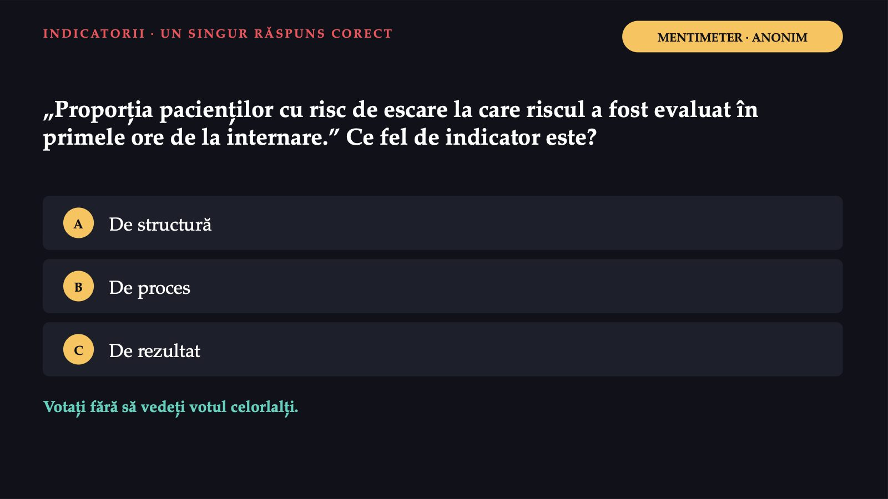
39 / 60Pe Mentimeter: „proporția pacienților cu risc de escare la care riscul a fost evaluat în primele ore de la internare”. Ce fel de indicator este: de structură, de proces sau de rezultat? Gândiți-vă ce numără, de fapt, indicatorul. Votați fără să vedeți votul celorlalți.
B. De proces
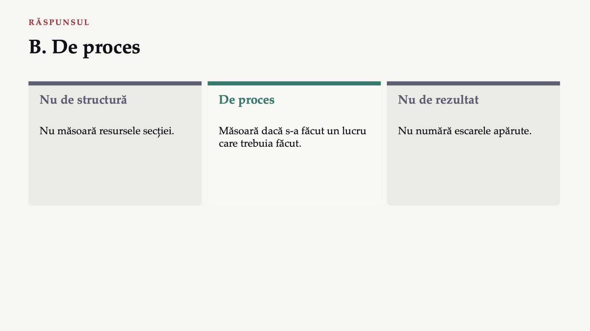
40 / 60Varianta bună este B, de proces. Indicatorul măsoară dacă s-a făcut un lucru care trebuia făcut: evaluarea riscului la internare. Nu este de structură, pentru că nu măsoară resursele secției. Nu este de rezultat, pentru că nu numără escarele apărute. Ca să deosebiți procesul de rezultat, întrebați-vă dacă indicatorul descrie o acțiune a echipei sau efectul îngrijirii asupra pacientului.
Acreditare, certificare, supraveghere
![TREI FORME DE EVALUARE EXTERNĂ · OBSERVATORUL EUROPEAN Acreditare, certificare, supraveghere Acreditarea Un organism de acreditare recunoaște public că organizația respectă standarde stabilite dinainte. Certificarea De regulă, conformitatea cu standardele ISO. Supravegherea Standardele minime pentru înregistrare, autorizare sau licențiere. Pe scurt: autorizarea spune că unitatea are voie să funcționeze; acreditarea, că respectă standardele de calitate și siguranță. Sursa: Busse și colab., 2019 (registru A1016, A1020). ISQua evaluează organismele de acreditare, între care programul din România (date din 2018, A1017).](diapozitive/C04/041.jpg) 41 / 60
41 / 60Trecem de la măsurarea internă la evaluarea externă, care are trei forme principale. Acreditarea este evaluarea externă a unei organizații de către un organism de acreditare, încheiată cu recunoașterea publică a faptului că organizația respectă standarde stabilite dinainte. Certificarea se folosește, de regulă, pentru conformitatea cu standardele Organizației Internaționale de Standardizare (ISO). Supravegherea urmărește standardele minime cerute pentru înregistrare, autorizare sau licențiere. Pe scurt: autorizarea spune că unitatea are voie să funcționeze; acreditarea, că respectă standardele de calitate și siguranță. Organizațiile de acreditare sunt evaluate, la rândul lor, de Societatea Internațională pentru Calitate în Sănătate (ISQua); potrivit datelor ISQua din 2018, între programele acreditate se afla și cel din România.
Spitalul primește un certificat ISO 9001 pentru sistemul lui de management al calității. Ce formă de evaluare externă este?
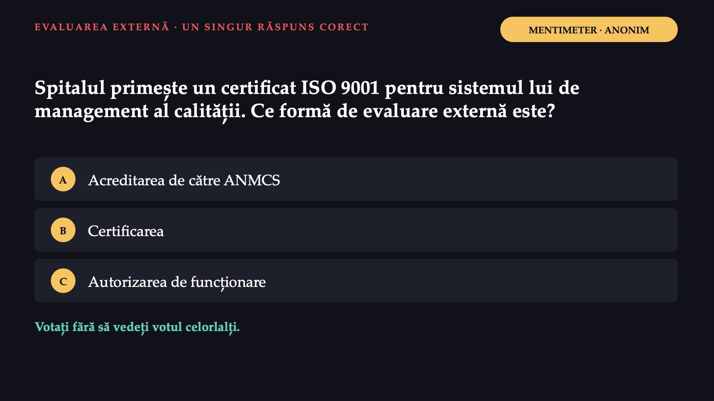
42 / 60Pe Mentimeter: spitalul primește un certificat ISO 9001 pentru sistemul lui de management al calității. Ce formă de evaluare externă este: acreditarea de către ANMCS, certificarea sau autorizarea de funcționare? Uitați-vă după ce standard se face evaluarea. Votați fără să vedeți votul celorlalți.
B. Certificarea
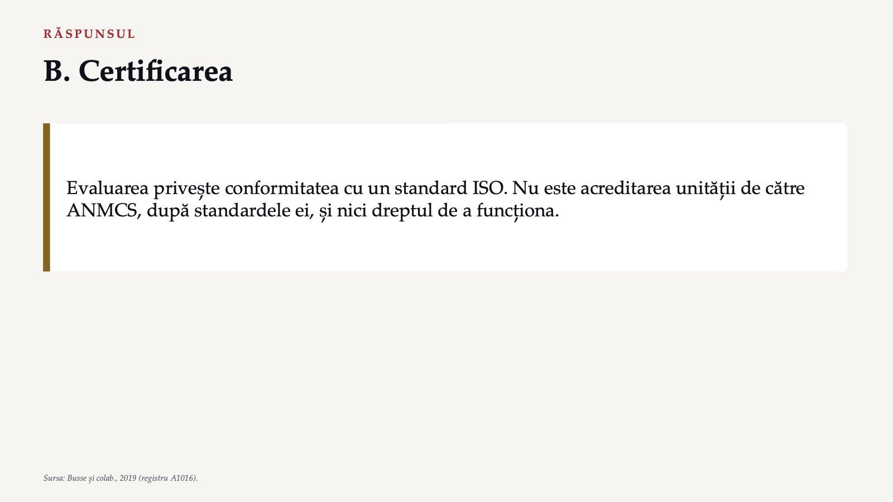
43 / 60Varianta bună este B, certificarea. Evaluarea privește conformitatea cu un standard ISO. Nu este acreditarea unității de către ANMCS, după standardele ANMCS, și nici dreptul de a funcționa, care ține de autorizare. Terminologia nu este însă uniformă: ce se numește certificare într-o țară poate fi numit acreditare în alta. De aceea, la examen contează distincția, nu doar cuvântul. Trecem acum la instituția care acreditează în România.
ANMCS: cine acreditează și cine răspunde
![LEGEA NR. 185/2017, ART. 1, 3, 4 ȘI 7 ANMCS: cine acreditează și cine răspunde ANMCS Instituție publică, în subordinea Guvernului și în coordonarea prim-ministrului. Standardizează, evaluează, acreditează și monitorizează. Unitatea sanitară Răspunde de calitatea serviciilor și de siguranța pacientului. Acreditarea este obligatorie, cu excepțiile din lege: medicina de familie, cabinetele dentare, unele cabinete de specialitate, laboratoarele. ANMCS verifică și recunoaște calitatea; spitalul și oamenii lui o produc. Sursa: Legea nr. 185/2017 (registru A1021, A1025, A1026).](diapozitive/C04/044.jpg) 44 / 60
44 / 60Ce este ANMCS? Potrivit Legii nr. 185/2017, este o instituție publică, organ de specialitate al administrației publice centrale, în subordinea Guvernului și în coordonarea prim-ministrului. Legea o definește ca autoritatea de standardizare și evaluare imparțială a serviciilor de sănătate, de acreditare și monitorizare a unităților sanitare. Cine răspunde însă de calitate? Potrivit legii, asigurarea calității serviciilor și a siguranței pacientului este responsabilitatea unităților sanitare. Acreditarea este obligatorie, cu excepțiile din lege: cabinetele de medicină de familie, cabinetele medicale dentare, unele cabinete din ambulatoriul de specialitate și laboratoarele de analize medicale și de anatomie patologică. Pe scurt: ANMCS verifică și recunoaște calitatea; spitalul și oamenii lui o produc.
Acreditarea unităților sanitare
![TERMENUL NOU 2 DIN 2 LEGEA NR. 185/2017, ART. 2 Acreditarea unităților sanitare „procesul de validare a conformității caracteristicilor serviciilor de sănătate efectuate de către unitățile sanitare, cu standardele ANMCS adoptate de către ANMCS și aprobate în condițiile prezentei legi, în urma căruia unitățile sanitare sunt clasificate pe categorii de acreditare pentru a conferi încredere în competența tehnico-profesională și organizatorică a acestora” Sursa: Legea nr. 185/2017, art. 2 (registru A1023).](diapozitive/C04/045.jpg) 45 / 60
45 / 60Al doilea termen nou al cursului: acreditarea unităților sanitare, în definiția Legii nr. 185/2017. Este procesul de validare a conformității serviciilor de sănătate ale unei unități cu standardele ANMCS. În urma lui, unitățile sunt clasificate pe categorii de acreditare, pentru a conferi încredere în competența lor tehnico-profesională și organizatorică. Pe scurt: acreditarea nu spune doar că un spital are voie să funcționeze, ci că serviciile lui respectă standardele adoptate de ANMCS. Pe ecran este textul legii; la examen se cere sensul lui.
5 ani
![LEGEA NR. 185/2017, ART. 2 ȘI 9 · SE CERE LA EXAMEN Două durate de cinci ani, ușor de confundat 5 ani Ciclul de acreditare intervalul în care se folosește o ediție a standardelor; se poate prelungi în epidemii sau dezastre 5 ani Perioada de acreditare valabilitatea certificatului de acreditare al unității Evaluarea se face după standardele în vigoare la data evaluării. Noua acreditare se cere cu cel puțin 6 luni înainte de expirarea certificatului. Sursa: Legea nr. 185/2017 (registru A1024, A1027, A1028).](diapozitive/C04/046.jpg) 46 / 60
46 / 60Acesta este singurul diapozitiv cu cifre care se cer la examen. Legea definește două durate de cinci ani, ușor de confundat. Ciclul de acreditare este intervalul de 5 ani în care se folosește o ediție a standardelor ANMCS; poate fi prelungit în situații de epidemii, pandemii, cataclisme, dezastre naturale sau catastrofe. Perioada de acreditare este perioada de 5 ani de valabilitate a certificatului de acreditare al unei unități sanitare. Două reguli contează pentru secția Marei: indiferent de data înscrierii, evaluarea se face după standardele în vigoare la data evaluării, iar o unitate acreditată cere o nouă acreditare cu cel puțin 6 luni înainte de expirarea certificatului.
Standardele ANMCS: trei referințe
![ORDINUL PREȘEDINTELUI ANMCS NR. 139 · MONITORUL OFICIAL NR. 808 BIS DIN 23.09.2026 Standardele ANMCS: trei referințe Patru niveluri: referința, standardul, criteriul, cerința. Managementul strategic și organizațional strategia, resursele umane, sistemul de management al calității, riscurile neclinice Managementul clinic evaluarea inițială, medicamentele, infecțiile asociate, siguranța pacientului, auditul clinic Etica medicală și drepturile pacientului autonomia, echitatea, binefacerea și evitarea vătămării Ediția a III-a are trei referințe, ca ediția a II-a din 2017. „Șase domenii” nu este structura standardelor ANMCS. Sursa: standardele ANMCS, ediția a III-a (registru A1030, A1031, A1033); Ordinul MS nr. 446/2017 (registru A1037).](diapozitive/C04/047.jpg) 47 / 60
47 / 60Cum sunt organizate standardele ANMCS? Pe patru niveluri: referința, care grupează standarde, criterii și cerințe cu același domeniu de aplicare; standardul, un nivel de performanță realizabil și măsurabil; criteriul, obiectivul specific de realizat; și cerința, acțiunea care trebuie întreprinsă. Ediția a III-a, pentru unitățile sanitare cu paturi, valabilă pentru al treilea ciclu de acreditare, a fost aprobată prin Ordinul președintelui ANMCS nr. 139, publicat în Monitorul Oficial nr. 808 bis din 23.09.2026. Ca și ediția a II-a, din 2017, are trei referințe: managementul strategic și organizațional, managementul clinic și etica medicală și drepturile pacientului. Formula „șase domenii” nu descrie structura standardelor ANMCS.
Ce cer standardele, concret
![STANDARDELE ANMCS, EDIȚIA A III-A CE VEDEȚI PE SECȚIE? Ce cer standardele, concret 1 Un sistem de management al calității care coordonează monitorizarea și îmbunătățirea 2 Evaluarea periodică a culturii siguranței, cu un instrument standardizat 3 Experiența pacienților și a aparținătorilor; analiza sesizărilor și a reclamațiilor 4 Un program de audit clinic; echipe cu medici, asistenți medicali și farmaciști Anexa citată nu precizează de la ce dată se evaluează spitalele după ediția a III-a. Sursa: standardele ANMCS, ediția a III-a (registru A1034, A1035).](diapozitive/C04/048.jpg) 48 / 60
48 / 60Ce înseamnă concret aceste standarde pe secție? Câteva cerințe din ediția a III-a. Unitatea trebuie să aibă un sistem de management al calității care coordonează monitorizarea, evaluarea și îmbunătățirea. Trebuie să evalueze periodic cultura siguranței, cu un instrument standardizat, și să folosească rezultatele. Trebuie să evalueze experiența pacienților și a aparținătorilor, prin metode accesibile și confidențiale, și să analizeze sesizările și reclamațiile. Și trebuie să aibă un program de audit clinic, prioritizat după riscuri și rezultate, cu echipe care includ obligatoriu medici, asistenți medicali și farmaciști. Scrieți în chat pe care dintre acestea l-ați văzut deja pe o secție. Anexa citată nu precizează de la ce dată se evaluează spitalele după ediția a III-a.
Cum decurge acreditarea
![PROCEDURA DIN 2017 · ORDINUL MS NR. 446/2017 Cum decurge acreditarea 1 · Pregătirea înscrierea; ANMCS planifică vizita; autoevaluarea spitalului 2 · Evaluarea documentele, observarea directă, discuțiile de grup, interviurile, simularea unor procese 3 · Acreditarea raportul de acreditare; ordinul de acreditare sau de neacreditare Apoi: monitorizarea și, la nevoie, reevaluarea. Procedura pentru ciclul al treilea nu a fost citită pentru acest curs. Sursa: Ordinul MS nr. 446/2017 (registru A1037–A1040); Legea nr. 185/2017 (registru A1047).](diapozitive/C04/049.jpg) 49 / 60
49 / 60Cum decurge acreditarea? Procedura aprobată în 2017 pentru al doilea ciclu are trei etape. Pregătirea evaluării: spitalul se înscrie, ANMCS planifică vizita și echipa de evaluatori, iar spitalul face autoevaluarea, adică își analizează serviciile și indicatorii și comunică concluziile către ANMCS. Evaluarea: comisia analizează documentele, observă direct activitatea, fără să o perturbe, organizează discuții de grup și interviuri și simulează unele procese pentru identificarea riscurilor clinice. Acreditarea: pe baza documentelor se întocmește raportul de acreditare, iar președintele ANMCS emite ordinul de acreditare sau de neacreditare. Apoi urmează monitorizarea și, la nevoie, reevaluarea. Procedura pentru ciclul al treilea nu a fost citită pentru acest curs.
Munca asistentului, în ochii evaluatorilor
 50 / 60
50 / 60Asistentul medical nu este un spectator al acreditării: o bună parte din ce verifică evaluatorii este munca lui de fiecare zi. Decul cursului numește cinci contribuții. Documentarea corectă și completă a îngrijirilor: foaia de observație, planul de îngrijire, evidența medicației. Aplicarea protocoalelor și a listelor de verificare: prevenirea căderilor și a escarelor, transfuzia, montarea cateterelor. Participarea la auditul intern și la echipele de autoevaluare. Culegerea și raportarea indicatorilor: infecțiile, căderile, satisfacția pacienților. Și cultura calității: raportarea erorilor fără teama de pedeapsă și învățarea din evenimentele adverse. Reperul pentru un audit al practicii pot fi procedurile de practică pentru asistenții medicali generaliști, aprobate prin ordin al ministrului sănătății.
Ce trei lucruri ar putea observa direct, fără să citească niciun document?
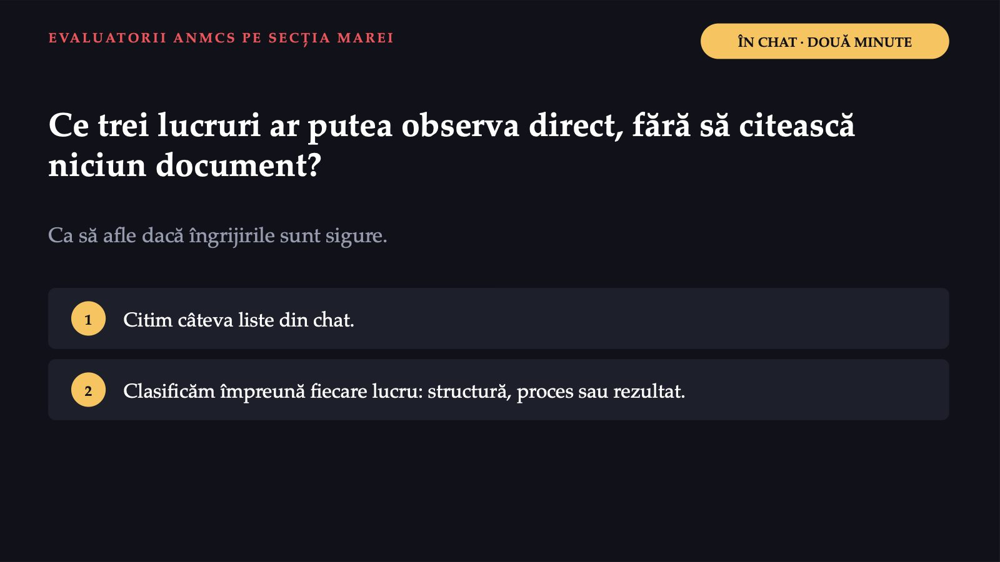
51 / 60Exercițiu, fiecare în chat. Evaluatorii ANMCS vin pe secția Marei. Ce trei lucruri ar putea observa direct, fără să citească niciun document, ca să afle dacă îngrijirile sunt sigure? Scrieți lista în chat, într-un singur mesaj. Apoi citim câteva liste și clasificăm împreună fiecare lucru: ține de structură, de proces sau de rezultat? Vă ajută modelul lui Donabedian și faptul că evaluarea ANMCS include observarea directă a activității.
Planifică, execută, verifică, acționează
![CICLUL PDCA · OBSERVATORUL EUROPEAN · OPENSTAX Planifică, execută, verifică, acționează Planifică problema, situația de pornire, obiectivul măsurabil, schimbarea de încercat Execută întâi la scară mică, cu culegerea datelor Acționează planul se modifică, iar ciclul reîncepe Verifică a funcționat planul? Cel mai influent cadru pentru îmbunătățirea calității. Etapa „verifică” este controlul retroactiv din cursul trecut; „acționează” deschide un nou ciclu de planificare. Sursa: Busse și colab., 2019 (registru A1018); OpenStax, 2019 (registru A1008).](diapozitive/C04/052.jpg) 52 / 60
52 / 60Evaluarea externă spune unde se află secția; îmbunătățirea o face echipa. Cel mai influent cadru pentru îmbunătățirea calității este ciclul PDCA, după inițialele în limba engleză ale celor patru etape: planifică, execută, verifică, acționează. Metoda vine din proiectarea industrială, de la Walter Shewhart și Edward Deming. Planifică: identifici problema, măsori situația de pornire, stabilești un obiectiv măsurabil și alegi schimbarea de încercat. Execută: aplici planul întâi la scară mică, cu culegerea datelor. Verifică: urmărești rezultatele și afli dacă planul a funcționat. Acționează: planul se modifică, iar ciclul reîncepe. Legătura cu cursul trecut: etapa „verifică” este controlul retroactiv, iar „acționează” deschide un nou ciclu de planificare.
PDCA pentru erorile de administrare
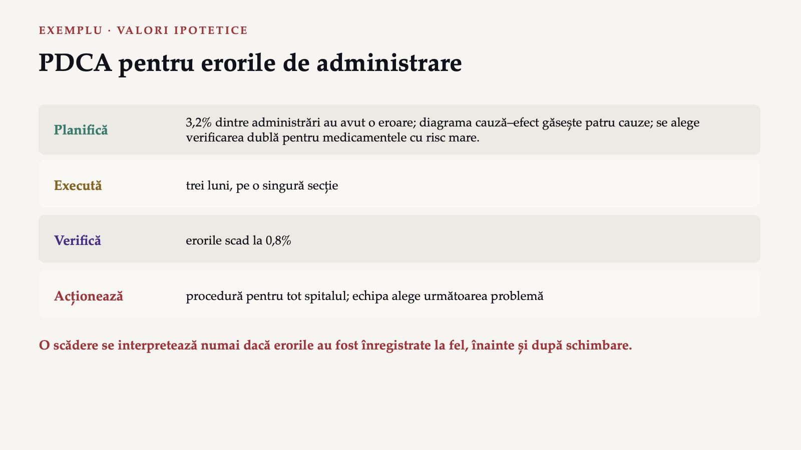
53 / 60Un exemplu, cu valori ipotetice. Pe o secție, 3,2% dintre administrările de medicamente urmărite au avut o eroare. Planifică: echipa, cu farmacistul, un medic și responsabilul cu calitatea, urmărește drumul medicamentului și găsește, cu o diagramă cauză–efect, patru cauze: întreruperile în timpul pregătirii, medicamentele cu nume sau ambalaje asemănătoare, lipsa verificării duble și comunicarea deficitară la predarea turei. Alege verificarea dublă obligatorie pentru medicamentele cu risc mare. Execută: trei luni, pe o singură secție. Verifică: erorile scad la 0,8%. Acționează: schimbarea devine procedură pentru tot spitalul, iar echipa alege următoarea problemă. Cifrele sunt construite; o scădere se interpretează numai dacă erorile au fost înregistrate la fel, înainte și după schimbare.
Pacienții se plâng că așteaptă mult la sonerie, noaptea
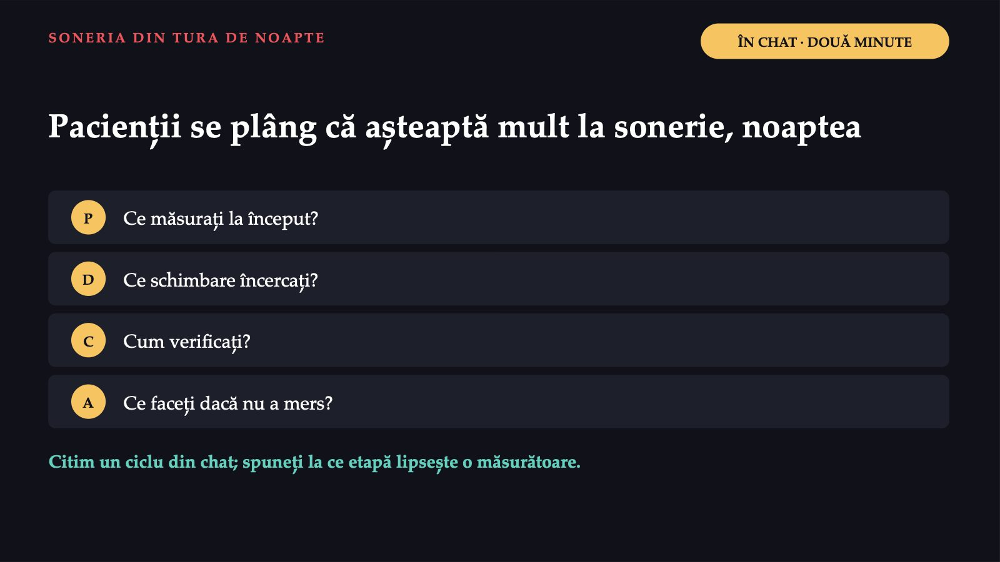
54 / 60Rândul vostru, în chat. Pe secția Marei, pacienții se plâng că așteaptă mult la sonerie în tura de noapte. Construiți un ciclu PDCA, câte o frază pentru fiecare etapă: ce măsurați la început, ce schimbare încercați, cum verificați și ce faceți dacă nu a mers. Scrieți ciclul într-un singur mesaj, cu literele P, D, C și A în față. Apoi citim un ciclu din chat și căutăm împreună etapa la care lipsește o măsurătoare.
Auditul clinic: o buclă care se închide
![AUDITUL CLINIC · ETAPELE: CONVENȚIE A CURSULUI Auditul clinic: o buclă care se închide Tema Standardul Datele Comparația Schimbarea și reauditarea Le arată profesioniștilor cum se situează practica lor față de un reper. Standardele ANMCS cer criterii explicite, măsuri de îmbunătățire și verificarea efectului prin reevaluare. Un audit fără reauditare a măsurat, dar nu a îmbunătățit nimic. Exemplul cu valori ipotetice din note: un audit al evaluării riscului de escare. Sursa: Busse și colab., 2019 (registru A1019); standardele ANMCS, ediția a III-a (registru A1035).](diapozitive/C04/055.jpg) 55 / 60
55 / 60O altă formă a aceleiași idei este auditul clinic. El le arată profesioniștilor cum se situează practica lor față de un reper; pentru că își apreciază cu greu, singuri, propria performanță, această informație îi poate motiva să-și schimbe practica. Standardele ANMCS cer ca auditul clinic să evalueze practica după criterii explicite, să ducă la măsuri de îmbunătățire și să verifice efectul lor prin reevaluare. Etapele, ca convenție a cursului: tema, standardul, datele, comparația, apoi schimbarea și reauditarea. În exemplul din note, cu valori ipotetice, evaluarea completă a riscului de escare apare în 34 din 50 de dosare, adică 68%, față de standardul de 100%. Un audit fără reauditare a măsurat, dar nu a îmbunătățit nimic.
Șapte instrumente simple
![INSTRUMENTELE DE BAZĂ · CONVENȚIE A CURSULUI Șapte instrumente simple Cauză–efect cauzele unei probleme Pareto cauzele, după frecvență Histograma distribuția valorilor Diagrama de dispersie relația a două variabile Fișa de control procesul în timp Diagrama de flux pașii procesului Foaia de înregistrare datele, la locul îngrijirii La lucrarea practică a săptămânii: câteva dintre ele, într-o simulare de audit. Pentru curioși (nu se evaluează): Six Sigma, Lean și tabloul de bord echilibrat, în note.](diapozitive/C04/056.jpg) 56 / 60
56 / 60Pentru analiza problemelor de calitate se folosesc șapte instrumente simple. Diagrama cauză–efect, numită și diagrama Ishikawa sau „os de pește”, caută cauzele unei probleme. Diagrama Pareto ordonează cauzele după frecvență, pornind de la observația că puține cauze produc cea mai mare parte a efectelor. Histograma reprezintă distribuția valorilor, diagrama de dispersie, relația dintre două variabile, iar fișa de control urmărește un proces în timp. Diagrama de flux reprezintă pașii unui proces, iar foaia de înregistrare servește la culegerea datelor la locul îngrijirii. La lucrarea practică veți folosi câteva dintre ele într-o simulare de audit. Metodele Six Sigma și Lean și tabloul de bord echilibrat sunt în note, pentru curioși.
Indicatorii sunt produși de oameni
![CAZUL SE ÎNCHIDE UNDE A ÎNCEPUT Indicatorii sunt produși de oameni Evaluatorii verifică protocoale, dosare și indicatori. Indicatorii sunt produși, zi de zi, de oameni care rămân în spital, care știu ce au de făcut și care raportează o greșeală fără teamă. Standardele ANMCS cer evaluarea periodică a culturii siguranței și a calității vieții profesionale, cu măsuri de îmbunătățire. Conversația Marei cu asistenta tânără face parte și ea din pregătirea secției pentru acreditare. Sursa: standardele ANMCS, ediția a III-a (registru A1034, A1036).](diapozitive/C04/057.jpg) 57 / 60
57 / 60Cazul se închide unde a început. Evaluatorii ANMCS vor verifica protocoale, dosare și indicatori. Acești indicatori sunt produși însă, zi de zi, de oameni care rămân în spital, care știu ce au de făcut și care raportează o greșeală fără teamă. De aceea, standardele ANMCS cer evaluarea periodică a culturii siguranței și a calității vieții profesionale a angajaților, cu măsuri de îmbunătățire. Conversația Marei cu asistenta tânără care vrea să plece face parte, astfel, și ea din pregătirea secției pentru acreditare. Cele două vești de la începutul cursului se întâlnesc aici.
Luni dimineață, în stagiu
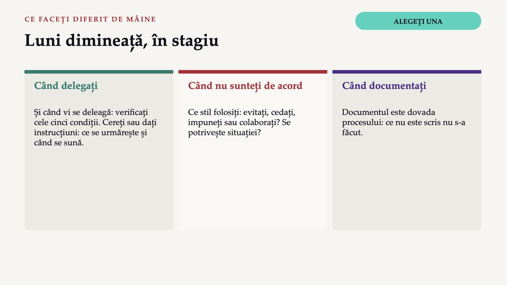
58 / 60Ce faceți diferit de mâine, în stagiu sau la primul loc de muncă? Alegeți una dintre cele trei situații și scrieți-o în chat. Când delegați sau vi se deleagă o activitate, verificați cele cinci condiții și dați sau solicitați instrucțiuni care spun ce se urmărește și când se sună. Când nu sunteți de acord cu un coleg, întrebați-vă ce stil folosiți: evitați, cedați, impuneți sau colaborați, și dacă stilul se potrivește situației. Când documentați o îngrijire, gândiți-vă că documentul este dovada procesului: ce nu este scris, pentru un audit sau pentru o evaluare ANMCS, nu s-a făcut.
Ce rămâne din cursul de azi
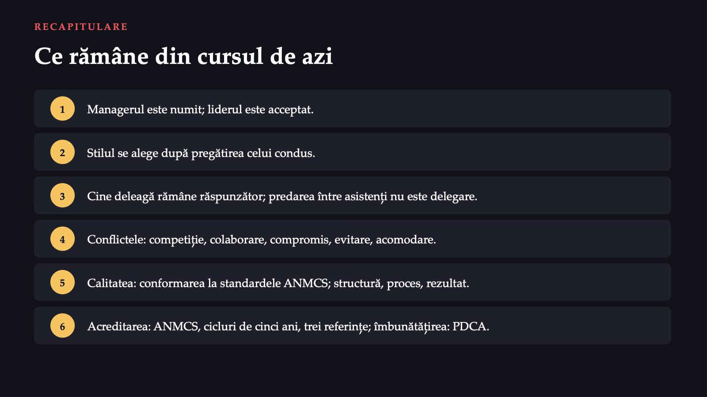
59 / 60Recapitulăm în șase idei. Managerul este numit; liderul este acceptat. Stilul se alege după pregătirea celui condus. Cine deleagă rămâne răspunzător de pacient, iar predarea între doi asistenți medicali nu este delegare. Conflictele se abordează prin competiție, colaborare, compromis, evitare sau acomodare, după situație. Calitatea este, potrivit Legii nr. 185/2017, nivelul de conformare la standardele ANMCS și se analizează prin structură, proces și rezultat. Acreditarea o face ANMCS, pe cicluri de cinci ani, cu un certificat valabil cinci ani și cu standarde organizate în trei referințe; îmbunătățirea continuă folosește ciclul PDCA.
Trei întrebări pentru final
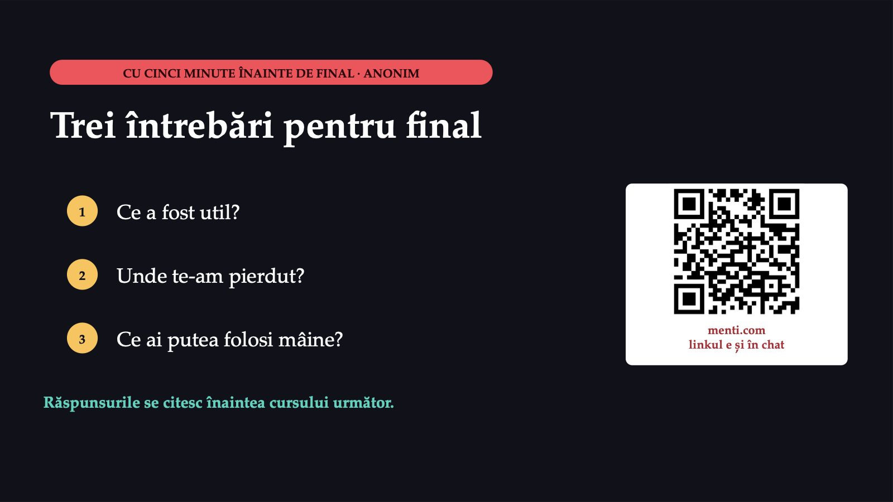
60 / 60Cu cinci minute înainte de final, biletul de ieșire, anonim, pe Mentimeter: ce a fost util, unde v-am pierdut și ce ați putea folosi mâine. Linkul e și în chat; nu aveți nevoie de cont. Răspunsurile se citesc înaintea cursului următor. Vă mulțumesc pentru participare.
Săgeți sau spațiu: navigare · O: vedere de ansamblu · N: notele prezentatorului · F: ecran complet · Esc: închidere